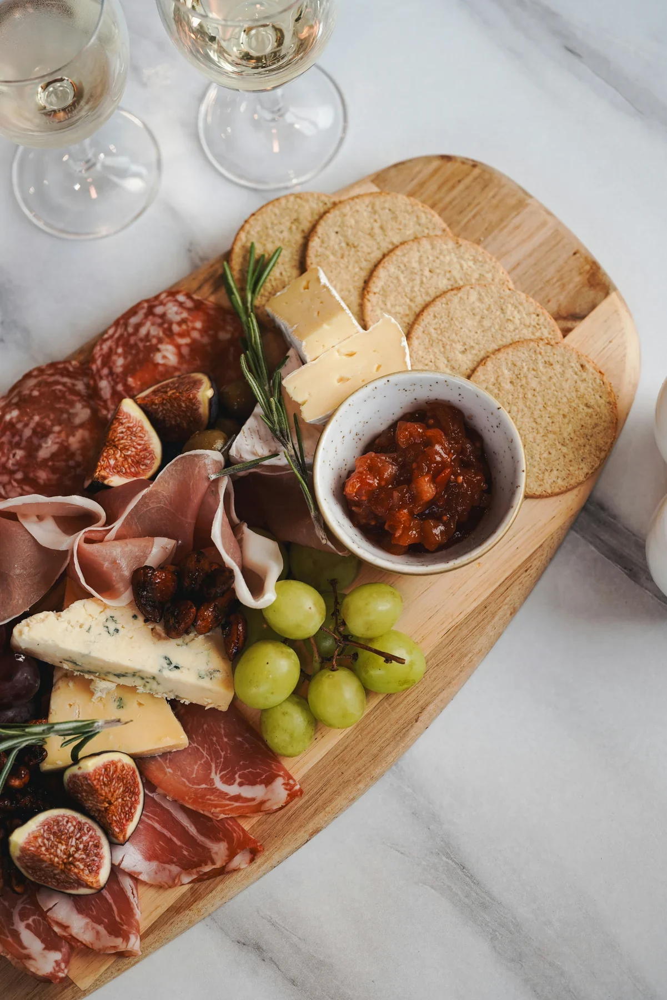
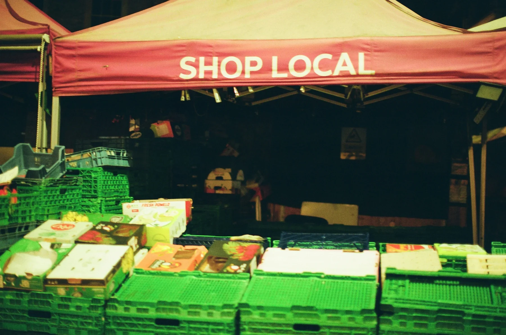
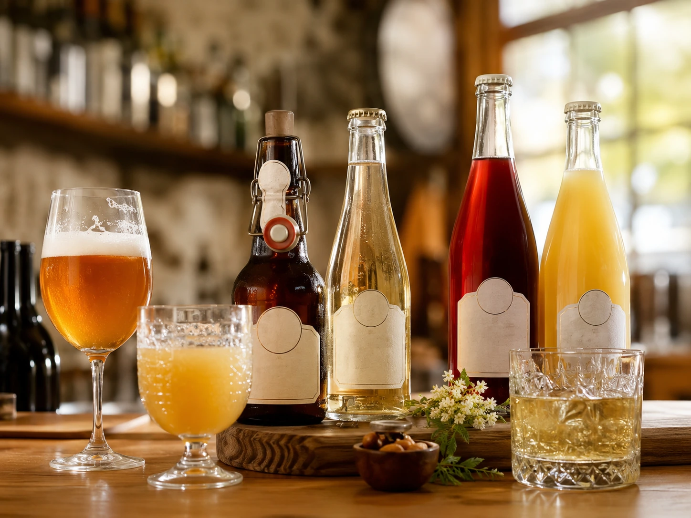
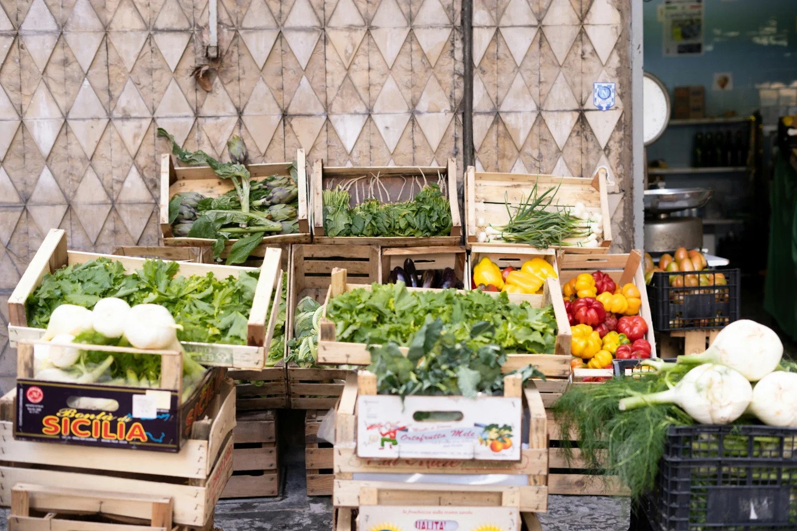
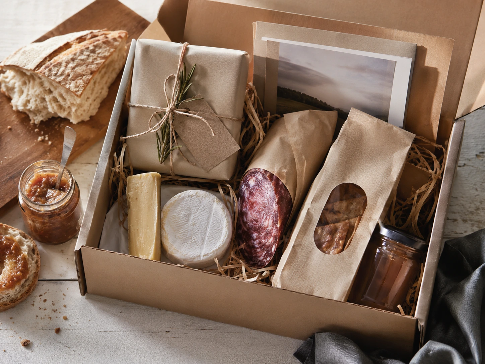

Herkenbare herkomst
Je gasten weten beter waar hun eten vandaan komt.
Lokale producten met een verhaal
Lokale producten voor horecaondernemers die hun gasten meer willen serveren dan alleen smaak.
Achter ieder lokaal product zit een maker, een streek en een verhaal. Sligro brengt regionale producten dichter bij jouw keuken, zodat jij jouw gasten iets authentieks kunt bieden.

Waarom lokaal?
Je gasten weten beter waar hun eten vandaan komt.
Lokale producten geven je kaart een eigen verhaal.
Regionale producten sluiten aan bij bewuste horeca.
Een goed verhaal maakt de gastbeleving sterker.
Van maker tot menukaart
Regionale leveranciers werken dagelijks aan producten met karakter.
Sligro selecteert lokale producten die passen bij professionele horeca.
Jij verwerkt de producten eenvoudig in je menukaart of borrelconcept.
Je gast proeft niet alleen kwaliteit, maar ook het verhaal erachter.
Assortiment

Voor borrelplanken, lunchgerechten en hotelbars.
Bekijk toepassing
Geeft borrelconcepten meer diepte en herkomst.
Bekijk toepassing
Van streekbrood tot vlaai voor koffie, lunch en dessert.
Bekijk toepassing
Kleine toevoegingen met veel verhaalwaarde.
Bekijk toepassing
Voor lunchspecials, groentegarnituren en vegetarische opties.
Bekijk toepassing
Maak arrangementen en borrelmomenten regionaal herkenbaar.
Bekijk toepassingReceptinspiratie

Combineer streekkaas, charcuterie, brood en mosterd tot een toegankelijke plank met een lokaal verhaal.

Gebruik lokale ingrediënten als basis voor een seizoensgerecht dat past bij lunchzaken en fastservice.

Een compacte borrelplank voor hotels, cafés en restaurants die gasten een regionale beleving willen bieden.

Leveranciersverhalen
Lokale producten worden sterker wanneer je weet wie ze maakt. Ontdek de verhalen achter regionale leveranciers en gebruik die inspiratie richting je gasten.
Lees de verhalen
Samplebox
Vraag de Van boer tot borrelplank samplebox aan en ontdek welke lokale producten passen bij jouw zaak. Inclusief receptinspiratie, herkomstkaartjes en voorbeeldteksten voor je menukaart.

Proeverij
Ontmoet regionale leveranciers, proef lokale producten en ontdek praktische toepassingen voor jouw menukaart.
Aan de slag
Ontdek producten, recepten en leveranciersverhalen die jouw menukaart meer herkomst en smaak geven.